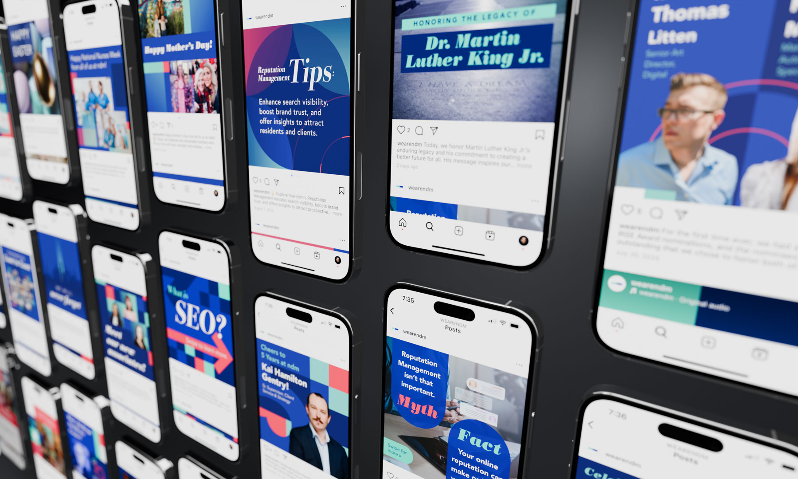

NDM Communications · Social Campaign · 2024
NDM Brand Identity & Social Campaign
Working alongside NDM’s lead copywriter and copy team, I translated the company’s messaging into a cohesive visual campaign spanning social content, motion design, 3D animation, and brand storytelling.
The Sizzle Reel
01Campaign Ecosystem
One visual language across every touchpoint.
The same system carried through motion graphics, digital advertising, email, and branded collateral, so every touchpoint felt unmistakably like NDM.

02Social Media System
Consistency at scale.
Designed dozens of branded social assets that balanced educational content, thought leadership, recruiting, event promotion, company culture, and campaign messaging. Every post followed a flexible visual system that allowed content to evolve without sacrificing brand recognition.
